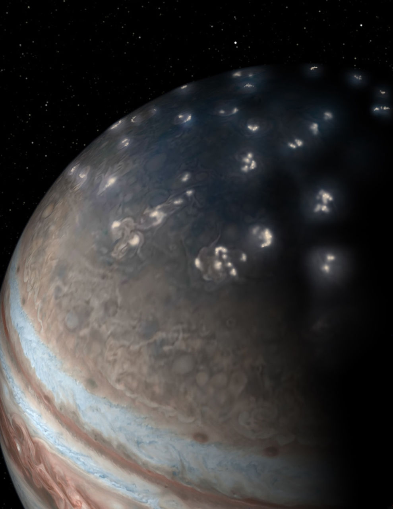

木星に発生する「雷」は古くから観測されていましたが、探査機が受信した電磁波のデータが 限られていたため、発生の起源について明らかではありませんでした。NASAの木星探査機「ジ ュノー」ミッションの研究者が科学誌Natureで発表した論文から、39年間わからなかった木星 の雷の性質が判明しています。
1979年3月に宇宙探査機「ボイジャー1号」が木星に到達して以来、木星で雷が発生しているこ とは電波受信器のデータからわかっていました。しかし、ボイジャー1号や「ガリレオ」「カッ シーニ」などによって記録されてきた木星の雷のデータは、目視による視覚情報とキロヘルツ 帯の周波数域に制限された電波信号に限られており、木星で発生する稲妻がどのようなものな のかや発生メカニズムについては詳しくわかっていませんでした。
